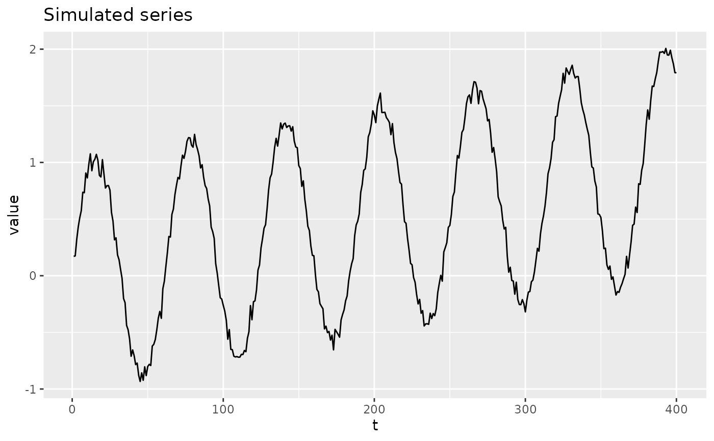
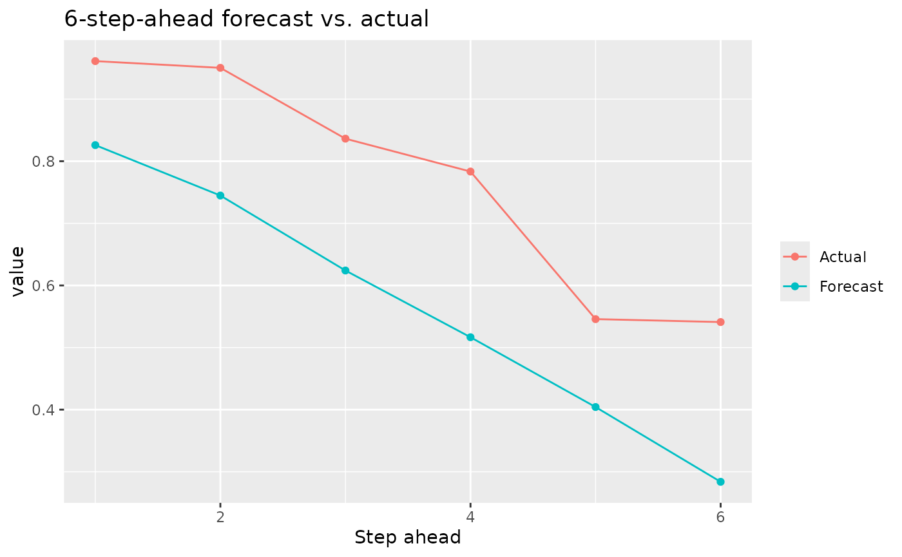
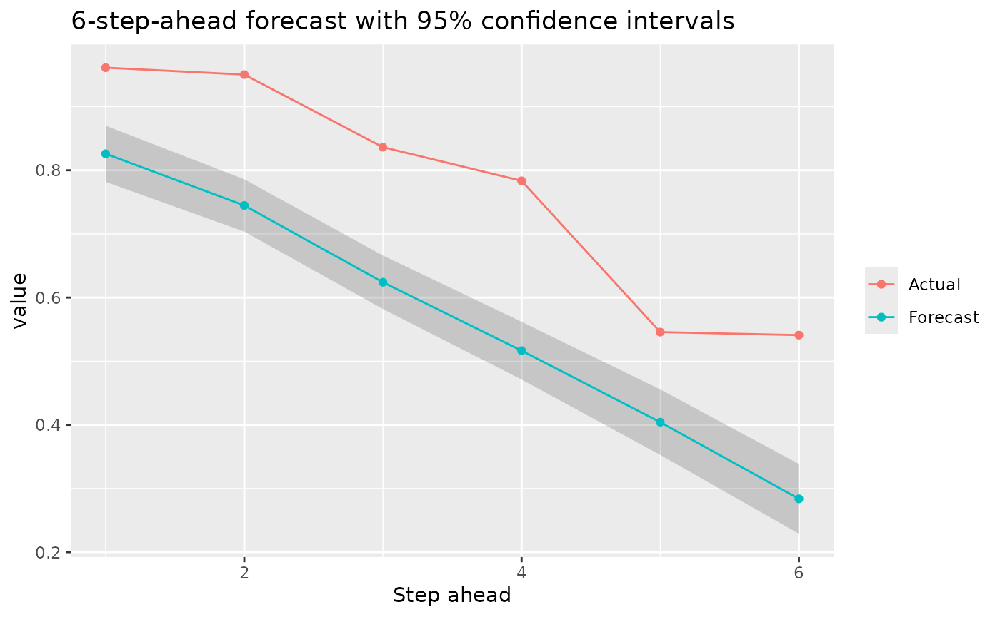
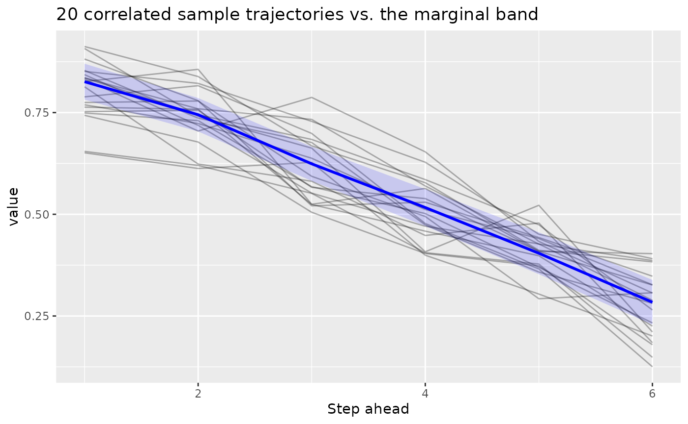

Multi-Step Time Series Forecasting with kerasnip
Source:vignettes/multistep_forecasting.Rmd
multistep_forecasting.RmdThis vignette shows how to build a Keras recurrent model with
kerasnip that forecasts several future steps of a time
series at once, using the “single-shot” multi-step pattern from
Keras/TensorFlow’s own time
series forecasting tutorial, adapted to the tidymodels
ecosystem.
The Building Blocks
Two ingredients turn flat, ordered tabular data into the shapes an RNN-based forecaster needs:
-
step_sequence()slides a window oftimestepspast rows into a single list-column of(timesteps, features)matrices: the(samples, timesteps, features)shapekeras3::layer_lstm()/keras3::layer_gru()expect as input. -
step_lead()builds the forecast target: one column per future step (lead_1_<var>,lead_2_<var>, …). Unlikerecipes::step_lag(), which only supports past shifts,step_lead()shifts forward, which is what a multi-step-ahead target needs.
When both steps draw on the same raw column,
step_lead() must come first:
step_sequence() consumes (and drops) its source column once
it has built the window, so step_lead() needs to see the
raw column while it still exists.
The resulting outcome columns (lead_1_<var>,
lead_2_<var>, …) are all numeric and map to a
single output block sized
units = horizon: one Keras output node predicting the whole
vector of future values in one forward pass, sharing one loss. This is
different from the multi-output models in
vignette("functional_api"), where each outcome column
becomes its own independently-configured head; here there is only one
output block, so kerasnip packs the numeric
outcome columns into a single (samples, horizon) matrix
target instead of splitting them.
Step 1: Load Libraries and Simulate a Series
library(kerasnip)
library(tidymodels)
#> ── Attaching packages ────────────────────────────────────── tidymodels 1.5.0 ──
#> ✔ broom 1.0.13 ✔ recipes 1.3.3
#> ✔ dials 1.4.4 ✔ rsample 1.3.2
#> ✔ dplyr 1.2.1 ✔ tailor 0.1.0
#> ✔ ggplot2 4.0.3 ✔ tidyr 1.3.2
#> ✔ infer 1.1.0 ✔ tune 2.1.0
#> ✔ modeldata 1.5.1 ✔ workflows 1.3.0
#> ✔ parsnip 1.6.0 ✔ workflowsets 1.1.1
#> ✔ purrr 1.2.2 ✔ yardstick 1.4.0
#> ── Conflicts ───────────────────────────────────────── tidymodels_conflicts() ──
#> ✖ purrr::discard() masks scales::discard()
#> ✖ dplyr::filter() masks stats::filter()
#> ✖ dplyr::lag() masks stats::lag()
#> ✖ recipes::step() masks stats::step()
library(keras3)
#>
#> Attaching package: 'keras3'
#> The following object is masked from 'package:yardstick':
#>
#> get_weights
#> The following object is masked from 'package:infer':
#>
#> generate
# Silence the startup messages from remove_keras_spec
options(kerasnip.show_removal_messages = FALSE)A small synthetic series (a noisy sine wave riding on a slow trend) stands in for a real dataset, so the vignette has no external data dependency.
set.seed(42)
n <- 400
t <- seq_len(n)
value <- sin(t / 10) + t / 400 + rnorm(n, sd = 0.05)
series <- tibble::tibble(value = value)
timesteps <- 24 # how much past history each window sees
horizon <- 6 # how many future steps to forecast at once
autoplot_data <- tibble::tibble(t = t, value = value)
ggplot(autoplot_data, aes(t, value)) +
geom_line() +
labs(title = "Simulated series", x = "t", y = "value")
Because forecasting is temporally ordered, the train/test split must
respect time: rsample::initial_time_split() takes the first
proportion of rows for training and the remainder for testing, rather
than a random shuffle.
split <- rsample::initial_time_split(series, prop = 0.8)
train_data <- rsample::training(split)
test_data <- rsample::testing(split)Step 2: Build the Recipe
step_naomit() defaults to skip = TRUE, so
the rows it drops (those without a complete future window) are only
dropped when training; at predict time, future values are
legitimately unknown, and the row is kept.
Both the window (predictor) and the lead columns (outcome) are
derived from value by the recipe steps themselves,
rather than existing as separate raw columns, so the recipe is built
with recipe(train_data) (no formula) and each step assigns
the role of the column(s) it creates (step_lead() defaults
to role = "outcome", step_sequence() to
role = "predictor").
rec <- recipe(train_data) |>
step_lead(value, lead = seq_len(horizon), prefix = "lead_") |>
step_naomit(starts_with("lead_")) |>
step_sequence(value, timesteps = timesteps, new_col = "window")Step 3: Define Layer Blocks and the Model Specification
The input block declares the (timesteps, features)
shape, an LSTM layer summarizes the window, and a single
output dense block emits all horizon
forecasted values at once.
input_block <- function(input_shape) {
layer_input(shape = input_shape, name = "window_input")
}
lstm_block <- function(tensor, units = 32) {
tensor |> layer_lstm(units = units)
}
# `units` needs a default to work around a doc-generator quirk when handling
# args with no default; it is always overridden via `output_units` below.
output_block <- function(tensor, units = 1) {
tensor |> layer_dense(units = units)
}
model_name <- "multistep_lstm_spec"
on.exit(remove_keras_spec(model_name), add = TRUE)
create_keras_functional_spec(
model_name = model_name,
layer_blocks = list(
window = input_block,
lstm = inp_spec(lstm_block, "window"),
output = inp_spec(output_block, "lstm")
),
mode = "regression"
)Step 4: Fit and Forecast
output_units is set to horizon so the
single output head predicts the full vector of future steps in one
pass.
spec <- multistep_lstm_spec(
lstm_units = 32,
output_units = horizon,
fit_epochs = 30,
fit_verbose = 0
) |>
set_engine("keras")
wf <- workflow(rec, spec)
fit_obj <- fit(wf, data = train_data)
#> 10/10 - 0s - 36ms/steppredict() returns a nested .pred
list-column: one row per input sample, each holding a small tibble of
.step (1 to horizon) and .pred
(the forecasted value at that step). This mirrors how the
censored package nests multiple survival-probability values
per row (.pred / .eval_time /
.pred_survival), nesting over forecast step instead of
evaluation time.
preds <- predict(fit_obj, new_data = test_data)
#> 2/2 - 0s - 94ms/step
preds
#> # A tibble: 57 × 1
#> .pred
#> <list>
#> 1 <tibble [6 × 2]>
#> 2 <tibble [6 × 2]>
#> 3 <tibble [6 × 2]>
#> 4 <tibble [6 × 2]>
#> 5 <tibble [6 × 2]>
#> 6 <tibble [6 × 2]>
#> 7 <tibble [6 × 2]>
#> 8 <tibble [6 × 2]>
#> 9 <tibble [6 × 2]>
#> 10 <tibble [6 × 2]>
#> # ℹ 47 more rows
preds$.pred[[1]]
#> # A tibble: 6 × 2
#> .step .pred
#> <int> <dbl>
#> 1 1 0.826
#> 2 2 0.745
#> 3 3 0.624
#> 4 4 0.517
#> 5 5 0.404
#> 6 6 0.284Step 5: Visualize the Forecast
Unnesting .pred turns the forecast horizon for one
starting point into a plain tibble, easy to compare against the actual
future values.
one_forecast <- preds |>
dplyr::slice(1) |>
tidyr::unnest(.pred)
actual_future <- test_data$value[seq_len(horizon) + timesteps - 1]
comparison <- one_forecast |>
dplyr::mutate(actual = actual_future)
ggplot(comparison, aes(.step)) +
geom_line(aes(y = .pred, color = "Forecast")) +
geom_point(aes(y = .pred, color = "Forecast")) +
geom_line(aes(y = actual, color = "Actual")) +
geom_point(aes(y = actual, color = "Actual")) +
labs(
title = "6-step-ahead forecast vs. actual",
x = "Step ahead",
y = "value",
color = NULL
)
Step 6: Uncertainty Intervals
type = "conf_int" and type = "pred_int"
also work for this vector-valued output. Each forecast step gets its
own last-layer Laplace posterior (its own prior precision and
observation noise), sharing the same penultimate feature representation.
This is the same independent-per-output treatment kerasnip
already uses for separately named multi-output heads, generalized from
“multiple Dense layers” to “multiple units of one Dense layer”. It lets
uncertainty differ (and typically grow) across the horizon instead of a
single pooled width applied to every step alike.
preds_ci <- predict(fit_obj, new_data = test_data, type = "conf_int")
#> 2/2 - 0s - 12ms/step
#> 2/2 - 0s - 12ms/step
#> 2/2 - 0s - 12ms/step
#> 2/2 - 0s - 12ms/step
#> 2/2 - 0s - 12ms/step
#> 2/2 - 0s - 12ms/step
comparison_ci <- preds_ci |>
dplyr::slice(1) |>
tidyr::unnest(.pred) |>
dplyr::mutate(actual = actual_future)
ggplot(comparison_ci, aes(.step)) +
geom_ribbon(aes(ymin = .pred_lower, ymax = .pred_upper), alpha = 0.2) +
geom_line(aes(y = .pred, color = "Forecast")) +
geom_point(aes(y = .pred, color = "Forecast")) +
geom_line(aes(y = actual, color = "Actual")) +
geom_point(aes(y = actual, color = "Actual")) +
labs(
title = "6-step-ahead forecast with 95% confidence intervals",
x = "Step ahead",
y = "value",
color = NULL
)
These are marginal per-step intervals: each step’s uncertainty is computed on its own, without modeling how errors at different steps co-move (e.g. an under-forecast at step 3 tending to also mean an under-forecast at step 4).
Step 7: Joint (Correlated) Prediction Intervals
predict(..., type = "pred_int", joint = TRUE) captures
that co-movement. Instead of a single symmetric band per step, each
forecast step’s own epistemic (weight) uncertainty is combined with a
noise term that is sampled jointly across steps, using the
empirical covariance of training residuals across the forecast horizon
(the classic “seemingly unrelated regression” treatment of several
linear outputs sharing one design matrix). The result is a set of
correlated, internally-consistent sample trajectories rather than
independent per-step guesses.
Rather than pre-summarizing these into another
.pred_lower/.pred_upper band, the result is
returned as raw draws tagged with a .draw column, the same
convention tidybayes and the wider tidyverse Bayesian
ecosystem use for “several posterior/predictive samples per
observation”, so you can compute whatever joint or marginal summary you
need with standard dplyr/tidyr tools.
preds_joint <- predict(
fit_obj,
new_data = test_data,
type = "pred_int",
joint = TRUE,
n_draws = 200
)
#> 2/2 - 0s - 12ms/step
one_row_draws <- preds_joint$.pred[[1]]
one_row_draws
#> # A tibble: 1,200 × 3
#> .draw .step .pred
#> <int> <int> <dbl>
#> 1 1 1 0.835
#> 2 2 1 0.769
#> 3 3 1 0.851
#> 4 4 1 0.835
#> 5 5 1 0.743
#> 6 6 1 0.912
#> 7 7 1 0.655
#> 8 8 1 0.749
#> 9 9 1 0.813
#> 10 10 1 0.763
#> # ℹ 1,190 more rows
# Draws at different steps are correlated, unlike the marginal intervals above.
one_row_draws |>
tidyr::pivot_wider(names_from = .step, values_from = .pred, names_prefix = "step_") |>
dplyr::select(step_1, step_2) |>
cor()
#> step_1 step_2
#> step_1 1.0000000 0.3758853
#> step_2 0.3758853 1.0000000A handful of individual sampled trajectories, plotted alongside the marginal band from Step 6, shows what the correlation buys you: real trajectories tend to stay consistently above or below the mean forecast across steps, rather than jittering independently step to step the way the marginal band alone would suggest.
sample_paths <- one_row_draws |>
dplyr::filter(.draw <= 20)
ggplot(sample_paths, aes(.step, .pred, group = .draw)) +
geom_line(alpha = 0.3) +
geom_ribbon(
data = comparison_ci,
aes(x = .step, y = .pred, ymin = .pred_lower, ymax = .pred_upper),
inherit.aes = FALSE,
alpha = 0.15,
fill = "blue"
) +
geom_line(
data = comparison_ci,
aes(x = .step, y = .pred),
inherit.aes = FALSE,
color = "blue",
linewidth = 1
) +
labs(
title = "20 correlated sample trajectories vs. the marginal band",
x = "Step ahead",
y = "value"
)
Epistemic (weight) uncertainty is still treated independently per
step even here; only the aleatoric noise term carries cross-step
correlation. A fully joint treatment of epistemic uncertainty too would
need a joint (Kronecker-factored) posterior over the entire last-layer
weight matrix, which is not implemented. joint = TRUE is
only available for type = "pred_int";
type = "conf_int" reflects epistemic uncertainty only,
which this implementation has no estimated cross-step correlation source
for.
Limitations
This is a v1 building block, not a full forecasting framework. In particular:
-
One ordered series at a time.
step_sequence()windows the incoming data as a single series; grouped/panel forecasting (many independent series, e.g. per-store or per-sensor) is not handled automatically and would need windowing done per group before this recipe. -
Fixed window and horizon.
timestepsandhorizon(viaoutput_units) are set once per spec, not tuned automatically across varying window lengths. -
Epistemic uncertainty is always per-step.
joint = TRUE(Step 7) correlates the aleatoric noise across steps, but each step’s own model-weight uncertainty is still computed independently.
Conclusion
step_sequence() and step_lead() let a
standard tidymodels recipe produce the
(samples, timesteps, features) input and
(samples, horizon) target shapes a recurrent
kerasnip model needs, so a multi-step forecaster fits into
the same
recipe() |> workflow() |> fit() |> predict() flow
as any other model in this package.